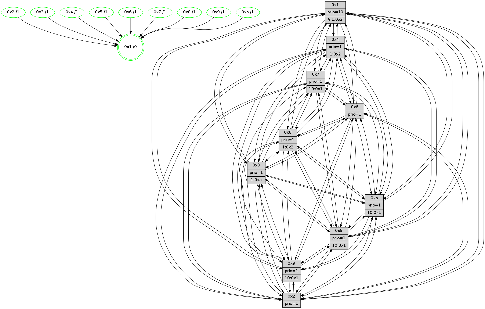

>> << IDX [start] -100 -25 -5 +0 +5 +25 +100 [1060.46476412]
 Previous packets
1055.007836 beacon07(faad) #0 coord=01,02,03,04,05,06,07,0a,09,08 cycle=688.0ms assoc 64 39 6e
1055.017841 beacon0a(faad) #0 coord=01,02,03,04,05,06,07,0a,09,08 cycle=688.0ms assoc 64 48 65
1055.027839 beacon09(faad) #0 coord=01,02,03,04,05,06,07,0a,09,08 cycle=688.0ms assoc 64 c6 b2
1055.037840 beacon08(faad) #0 coord=01,02,03,04,05,06,07,0a,09,08 cycle=688.0ms assoc 64 bc ff
1055.049369 [Hello(5): seq=674 sym=7,6,4,3,1,9,8,10,2 sysInfo=hasWarning stat=7:8,15,13,11/6:6,7,13,0/4:8,0,7,10/3:5,4,2,12/1:12,10,14,1/9:5,2,8,7/8:11,0,3,0/10:15,10,1,7/2:9,3,7,3]
1055.052398 [Color(8) seq=296 @0:0 prio=1 >1.@2,1.@3,1.@5,1.@a]
1055.054257 [Color(10) seq=263 @0:0 prio=1 >10.@1,1.@2,1.@3,1.@5]
1055.056639 [Hello(3): seq=674 sym=1,7,6,2,4,8,9,10,5 sysInfo=hasWarning stat=1:7,15,7,0/7:8,14,0,9/6:9,13,15,3/2:9,6,2,13/4:13,5,5,9/8:7,8,15,2/9:5,4,5,12/10:7,0,2,3/5:14,7,11,14]
1055.061702 [Color(3) seq=303 @0:0 prio=1 >1.@a]
1055.068885 [Hello(6): seq=674 sym=2,3,5,4,7,9,8,10,1 sysInfo= stat=2:0,4,7,3/3:11,8,8,10/5:9,5,6,0/4:12,14,15,3/7:2,12,8,9/9:14,13,8,6/8:10,4,3,3/10:13,14,12,12/1:8,6,11,1]
1055.073586 [Hello(2): seq=670 sym=4,5,7,6,3,9,8,10,1 sysInfo=hasWarning stat=4:15,12,11,8/5:3,0,1,0/7:15,14,9,11/6:2,11,1,9/3:15,12,1,7/9:8,10,3,5/8:3,8,13,9/10:7,14,4,10/1:6,8,12,1]
1055.078245 [Color(6) seq=306 @0:0 prio=1]
----------------------------------------------------------------------
1055.735981 beacon01(faad) #0 coord=01,02,03,04,05,06,07,0a,09,08 cycle=688.0ms assoc
-- color-indic=1 64 95 2a
1055.745965 beacon02(faad) #0 coord=01,02,03,04,05,06,07,0a,09,08 cycle=688.0ms assoc 64 06 1b
1055.755964 beacon03(faad) #0 coord=01,02,03,04,05,06,07,0a,09,08 cycle=688.0ms assoc 64 7c 56
1055.765965 beacon04(faad) #0 coord=01,02,03,04,05,06,07,0a,09,08 cycle=688.0ms assoc 64 0b bc
1055.775965 beacon05(faad) #0 coord=01,02,03,04,05,06,07,0a,09,08 cycle=688.0ms assoc 64 71 f1
1055.785965 beacon06(faad) #0 coord=01,02,03,04,05,06,07,0a,09,08 cycle=688.0ms assoc 64 ff 26
1055.795966 beacon07(faad) #0 coord=01,02,03,04,05,06,07,0a,09,08 cycle=688.0ms assoc 64 85 6b
1055.805969 beacon0a(faad) #0 coord=01,02,03,04,05,06,07,0a,09,08 cycle=688.0ms assoc 64 f4 60
1055.815969 beacon09(faad) #0 coord=01,02,03,04,05,06,07,0a,09,08 cycle=688.0ms assoc 64 7a b7
1055.825969 beacon08(faad) #0 coord=01,02,03,04,05,06,07,0a,09,08 cycle=688.0ms assoc 64 00 fa
1055.838161 [Hello(8): seq=618 sym=5,2,3,4,9,6,7,10,1 sysInfo=hasWarning stat=5:3,14,10,0/2:0,15,5,7/3:14,15,9,14/4:9,1,1,9/9:7,7,11,2/6:4,7,8,11/7:7,13,9,2/10:15,11,13,3/1:6,1,10,0]
1055.840882 [Color(5) seq=281 @0:0 prio=1 >10.@1,1.@2,1.@3,1.@4]
1055.842612 [Hello(9): seq=618 sym=2,5,3,4,7,6,8,10,1 sysInfo=hasWarning stat=2:10,15,3,4/5:0,13,2,5/3:11,13,5,14/4:0,1,0,0/7:15,3,3,10/6:9,11,12,9/8:6,10,6,3/10:10,2,7,3/1:14,7,13,1]
1055.846089 [Color(9) seq=280 @0:0 prio=1 >10.@1,1.@2,1.@3,1.@5]
1055.848188 [Hello(4): seq=674 sym=5,7,6,2,3,9,8,10,1 sysInfo= stat=5:3,12,6,14/7:9,0,5,9/6:2,15,3,10/2:5,14,0,11/3:5,11,3,10/9:3,7,11,9/8:13,3,9,4/10:4,7,12,12/1:11,9,12,1]
1055.851103 [Color(2) seq=279 @0:0 prio=1]
1055.852439 [Color(4) seq=254 @0:0 prio=1 >1.@2,1.@3,1.@5,1.@6]
1055.855038 [Hello(7): seq=674 sym=2,3,5,6,4,8,9,10,1 sysInfo=hasWarning stat=2:11,7,12,14/3:3,2,10,14/5:5,5,12,1/6:8,4,9,7/4:0,1,0,0/8:9,8,7,1/9:12,12,8,0/10:6,11,14,4/1:2,2,13,0]
1055.858845 [Hello(10): seq=607 sym=6,2,3,8,7,5,9,4,1 sysInfo=hasWarning stat=6:6,9,10,4/2:9,11,0,7/3:14,3,1,10/8:7,14,4,0/7:7,12,9,4/5:15,8,10,14/9:9,4,11,1/4:2,4,11,8/1:9,13,3,1]
1055.862397 [Color(1) seq=355 @0:0 prio=10 >>1.@2,1.@3,1.@5]
1055.864718 [Color(7) seq=233 @0:0 prio=1 >10.@1,1.@2,1.@3,1.@5]
----------------------------------------------------------------------
1056.524116 beacon01(faad) #0 coord=01,02,03,04,05,06,07,0a,09,08 cycle=688.0ms assoc
-- color-indic=1 64 51 24
1056.534097 beacon02(faad) #0 coord=01,02,03,04,05,06,07,0a,09,08 cycle=688.0ms assoc 64 c2 15
1056.544098 beacon03(faad) #0 coord=01,02,03,04,05,06,07,0a,09,08 cycle=688.0ms assoc 64 b8 58
1056.554099 beacon04(faad) #0 coord=01,02,03,04,05,06,07,0a,09,08 cycle=688.0ms assoc 64 cf b2
1056.564098 beacon05(faad) #0 coord=01,02,03,04,05,06,07,0a,09,08 cycle=688.0ms assoc 64 b5 ff
1056.574098 beacon06(faad) #0 coord=01,02,03,04,05,06,07,0a,09,08 cycle=688.0ms assoc 64 3b 28
1056.584100 beacon07(faad) #0 coord=01,02,03,04,05,06,07,0a,09,08 cycle=688.0ms assoc 64 41 65
1056.594105 beacon0a(faad) #0 coord=01,02,03,04,05,06,07,0a,09,08 cycle=688.0ms assoc 64 30 6e
1056.604103 beacon09(faad) #0 coord=01,02,03,04,05,06,07,0a,09,08 cycle=688.0ms assoc 64 be b9
1056.614105 beacon08(faad) #0 coord=01,02,03,04,05,06,07,0a,09,08 cycle=688.0ms assoc 64 c4 f4
1056.625645 [Hello(5): seq=675 sym=7,6,4,3,1,9,8,10,2 sysInfo=hasWarning stat=7:9,0,13,11/6:7,8,13,0/4:9,1,7,10/3:6,5,2,12/1:12,11,14,1/9:6,3,8,7/8:12,1,3,0/10:0,11,1,7/2:10,4,7,3]
1056.628653 [Color(8) seq=297 @0:0 prio=1 >1.@2,1.@3,1.@5,1.@a]
1056.630846 [Hello(6): seq=675 sym=2,3,5,4,7,9,8,10,1 sysInfo= stat=2:0,5,7,3/3:11,8,8,10/5:10,6,6,0/4:13,15,15,3/7:3,13,8,9/9:15,14,8,6/8:11,5,3,3/10:14,14,12,12/1:8,7,11,1]
1056.633835 [Color(10) seq=264 @0:0 prio=1 >10.@1,1.@2,1.@3,1.@5]
1056.635806 [Hello(2): seq=671 sym=4,5,7,6,3,9,8,10,1 sysInfo=hasWarning stat=4:15,13,11,8/5:3,0,1,0/7:0,15,9,11/6:2,12,1,9/3:15,12,1,7/9:8,10,3,5/8:4,8,13,9/10:8,14,4,10/1:6,9,12,1]
1056.638583 [Color(6) seq=307 @0:0 prio=1]
1056.644353 [Hello(3): seq=675 sym=1,7,6,2,4,8,9,10,5 sysInfo=hasWarning stat=1:8,0,7,0/7:9,15,0,9/6:10,14,15,3/2:10,7,2,13/4:14,6,5,9/8:8,9,15,2/9:6,5,5,12/10:8,0,2,3/5:14,8,11,14]
1056.647796 [Color(3) seq=304 @0:0 prio=1 >1.@a]
----------------------------------------------------------------------
1057.312246 beacon01(faad) #0 coord=01,02,03,04,05,06,07,0a,09,08 cycle=688.0ms assoc
-- color-indic=1 64 ed 21
1057.322228 beacon02(faad) #0 coord=01,02,03,04,05,06,07,0a,09,08 cycle=688.0ms assoc 64 7e 10
1057.332227 beacon03(faad) #0 coord=01,02,03,04,05,06,07,0a,09,08 cycle=688.0ms assoc 64 04 5d
1057.342229 beacon04(faad) #0 coord=01,02,03,04,05,06,07,0a,09,08 cycle=688.0ms assoc 64 73 b7
1057.352228 beacon05(faad) #0 coord=01,02,03,04,05,06,07,0a,09,08 cycle=688.0ms assoc 64 09 fa
1057.362228 beacon06(faad) #0 coord=01,02,03,04,05,06,07,0a,09,08 cycle=688.0ms assoc 64 87 2d
1057.372229 beacon07(faad) #0 coord=01,02,03,04,05,06,07,0a,09,08 cycle=688.0ms assoc 64 fd 60
1057.382234 beacon0a(faad) #0 coord=01,02,03,04,05,06,07,0a,09,08 cycle=688.0ms assoc 64 8c 6b
1057.392233 beacon09(faad) #0 coord=01,02,03,04,05,06,07,0a,09,08 cycle=688.0ms assoc 64 02 bc
1057.402234 beacon08(faad) #0 coord=01,02,03,04,05,06,07,0a,09,08 cycle=688.0ms assoc 64 78 f1
1057.414743 [Hello(10): seq=608 sym=6,2,3,8,7,5,9,4,1 sysInfo=hasWarning stat=6:6,9,10,4/2:10,11,0,7/3:15,4,1,10/8:7,14,4,0/7:7,13,9,4/5:0,8,10,14/9:9,4,11,1/4:2,4,11,8/1:9,14,3,1]
1057.418097 [Hello(4): seq=675 sym=5,7,6,2,3,9,8,10,1 sysInfo= stat=5:4,12,6,14/7:10,1,5,9/6:3,15,3,10/2:6,14,0,11/3:6,12,3,10/9:3,7,11,9/8:14,4,9,4/10:5,8,12,12/1:11,10,12,1]
1057.421123 [Hello(9): seq=619 sym=2,5,3,4,7,6,8,10,1 sysInfo=hasWarning stat=2:11,0,3,4/5:1,13,2,5/3:12,14,5,14/4:1,2,0,0/7:0,4,3,10/6:10,11,12,9/8:7,11,6,3/10:11,3,7,3/1:15,8,13,1]
1057.423677 [Hello(7): seq=675 sym=2,3,5,6,4,8,10,1 sysInfo=hasWarning stat=2:12,7,12,14/3:4,3,10,14/5:6,5,12,1/6:9,4,9,7/4:0,1,0,0/8:10,9,7,1/10:6,12,14,4/1:2,2,13,0]
1057.426177 [Color(4) seq=255 @0:0 prio=1 >1.@2,1.@3,1.@5,1.@6]
1057.427977 [Color(5) seq=282 @0:0 prio=1 >10.@1,1.@2,1.@3,1.@4]
1057.430663 [Color(7) seq=234 @0:0 prio=1 >10.@1,1.@2,1.@3,1.@5]
1057.432882 [Hello(8): seq=619 sym=5,2,3,4,9,6,7,10,1 sysInfo=hasWarning stat=5:4,15,10,0/2:1,0,5,7/3:15,0,9,14/4:10,2,1,9/9:8,8,11,2/6:5,7,8,11/7:8,14,9,2/10:0,12,13,3/1:6,2,10,0]
1057.437516 [Color(2) seq=280 @0:0 prio=1]
1057.438790 [STC(1) #0.153 tree-change,inconsistent-stability,stable,to-color d=0]
1057.440030 [Color(9) seq=281 @0:0 prio=1 >10.@1,1.@2,1.@3,1.@5]
1057.443179 [Color(1) seq=356 @0:0 prio=10 >>1.@2,1.@3,1.@5]
----------------------------------------------------------------------
1058.100376 beacon01(faad) #0 coord=01,02,03,04,05,06,07,0a,09,08 cycle=688.0ms assoc
-- color-indic=1 64 f9 4f
1058.110359 beacon02(faad) #0 coord=01,02,03,04,05,06,07,0a,09,08 cycle=688.0ms assoc 64 6a 7e
1058.120357 beacon03(faad) #0 coord=01,02,03,04,05,06,07,0a,09,08 cycle=688.0ms assoc 64 10 33
1058.130358 beacon04(faad) #0 coord=01,02,03,04,05,06,07,0a,09,08 cycle=688.0ms assoc 64 67 d9
1058.140359 beacon05(faad) #0 coord=01,02,03,04,05,06,07,0a,09,08 cycle=688.0ms assoc 64 1d 94
1058.150358 beacon06(faad) #0 coord=01,02,03,04,05,06,07,0a,09,08 cycle=688.0ms assoc 64 93 43
1058.160360 beacon07(faad) #0 coord=01,02,03,04,05,06,07,0a,09,08 cycle=688.0ms assoc 64 e9 0e
1058.170364 beacon0a(faad) #0 coord=01,02,03,04,05,06,07,0a,09,08 cycle=688.0ms assoc 64 98 05
1058.180365 beacon09(faad) #0 coord=01,02,03,04,05,06,07,0a,09,08 cycle=688.0ms assoc 64 16 d2
1058.190364 beacon08(faad) #0 coord=01,02,03,04,05,06,07,0a,09,08 cycle=688.0ms assoc 64 6c 9f
1058.201928 [Hello(1): seq=585 sym=4,2,9,5,10,3,8,6,7 sysInfo=coloring-mode-on,ColoringModeRequestCalled stat=4:3,2,7,2/2:3,13,6,13/9:12,9,6,6/5:6,9,15,7/10:9,5,8,5/3:1,7,12,5/8:10,9,6,1/6:12,6,6,11/7:13,11,6,12]
1058.204680 [STC(4)->1 #0.153 tree-change,inconsistent-stability,stable,to-color d=1]
1058.206458 [STC(10)->1 #0.153 tree-change,inconsistent-stability,stable,to-color d=1]
1058.208060 [Hello(3): seq=676 sym=1,7,6,2,4,8,9,10,5 sysInfo=hasWarning stat=1:8,1,8,0/7:10,0,0,9/6:10,14,15,3/2:10,8,2,13/4:15,7,5,9/8:9,10,15,2/9:7,6,5,12/10:9,0,2,3/5:15,9,11,14]
1058.210888 [STC(8)->1 #0.153 tree-change,inconsistent-stability,stable,to-color d=1]
1058.212814 [STC(7)->1 #0.153 tree-change,inconsistent-stability,stable,to-color d=1]
1058.218198 [STC(3)->1 #0.153 tree-change,inconsistent-stability,stable,to-color d=1]
1058.220478 [Hello(6): seq=676 sym=2,3,5,4,7,9,8,10,1 sysInfo= stat=2:0,6,7,3/3:12,9,8,10/5:11,7,6,0/4:14,0,15,3/7:4,14,8,9/9:0,15,8,6/8:12,6,3,3/10:15,14,12,12/1:8,8,12,1]
1058.224247 [STC(6)->1 #0.153 tree-change,inconsistent-stability,stable,to-color d=1]
1058.227173 [Color(6) seq=308 @0:0 prio=1]
1058.228898 [Color(3) seq=305 @0:0 prio=1 >1.@a]
1058.231837 [STC(5)->1 #0.153 tree-change,inconsistent-stability,stable,to-color d=1]
1058.234870 [Hello(2): seq=672 sym=4,5,7,6,3,9,8,10,1 sysInfo=hasWarning stat=4:15,13,11,8/5:3,0,1,0/7:0,15,9,11/6:2,12,1,9/3:0,13,1,7/9:8,11,3,5/8:4,8,13,9/10:9,14,4,10/1:6,10,13,1]
1058.237714 [STC(2)->1 #0.153 tree-change,inconsistent-stability,stable,to-color d=1]
1058.242374 [Color(10) seq=265 @0:0 prio=1 >10.@1,1.@2,1.@3,1.@5]
----------------------------------------------------------------------
1058.888505 beacon01(faad) #0 coord=01,02,03,04,05,06,07,0a,09,08 cycle=688.0ms assoc
-- color-indic=1 64 45 4a
1058.898487 beacon02(faad) #0 coord=01,02,03,04,05,06,07,0a,09,08 cycle=688.0ms assoc 64 d6 7b
1058.908489 beacon03(faad) #0 coord=01,02,03,04,05,06,07,0a,09,08 cycle=688.0ms assoc 64 ac 36
1058.918488 beacon04(faad) #0 coord=01,02,03,04,05,06,07,0a,09,08 cycle=688.0ms assoc 64 db dc
1058.928488 beacon05(faad) #0 coord=01,02,03,04,05,06,07,0a,09,08 cycle=688.0ms assoc 64 a1 91
1058.938489 beacon06(faad) #0 coord=01,02,03,04,05,06,07,0a,09,08 cycle=688.0ms assoc 64 2f 46
1058.948489 beacon07(faad) #0 coord=01,02,03,04,05,06,07,0a,09,08 cycle=688.0ms assoc 64 55 0b
1058.958494 beacon0a(faad) #0 coord=01,02,03,04,05,06,07,0a,09,08 cycle=688.0ms assoc 64 24 00
1058.968493 beacon09(faad) #0 coord=01,02,03,04,05,06,07,0a,09,08 cycle=688.0ms assoc 64 aa d7
1058.978493 beacon08(faad) #0 coord=01,02,03,04,05,06,07,0a,09,08 cycle=688.0ms assoc 64 d0 9a
1058.990674 [Hello(8): seq=620 sym=5,2,3,4,9,6,7,10,1 sysInfo=hasWarning stat=5:4,15,11,0/2:2,1,6,7/3:15,1,10,14/4:10,2,2,9/9:8,9,11,2/6:6,8,9,11/7:8,14,9,2/10:0,13,13,3/1:7,3,11,0]
1058.993406 [Color(1) seq=357 @0:0 prio=10 >>1.@2,1.@3,1.@5]
1058.994999 [Color(5) seq=283 @0:0 prio=1 >10.@1,1.@2,1.@3,1.@4]
1059.001308 [Color(4) seq=256 @0:0 prio=1 >1.@2,1.@3,1.@5,1.@6]
1059.002939 [Hello(7): seq=676 sym=2,3,5,6,4,8,10,1 sysInfo=hasWarning stat=2:13,8,13,14/3:4,4,11,14/5:6,5,13,1/6:10,5,10,7/4:0,1,0,0/8:11,9,7,1/10:7,13,14,4/1:2,3,14,0]
1059.005500 [Color(2) seq=281 @0:0 prio=1]
1059.008642 [Color(7) seq=235 @0:0 prio=1 >10.@1,1.@2,1.@3,1.@5]
1059.013801 [Hello(10): seq=609 sym=6,2,3,8,7,5,9,4,1 sysInfo=hasWarning stat=6:6,9,10,4/2:10,12,0,7/3:15,4,1,10/8:8,14,4,0/7:8,14,9,4/5:0,9,10,14/9:10,5,11,1/4:3,5,12,8/1:10,15,4,1]
1059.021682 [Color(9) seq=282 @0:0 prio=1 >10.@1,1.@2,1.@3,1.@5]
----------------------------------------------------------------------
1059.676635 beacon01(faad) #0 coord=01,02,03,04,05,06,07,0a,09,08 cycle=688.0ms assoc
-- color-indic=1 64 81 44
1059.686619 beacon02(faad) #0 coord=01,02,03,04,05,06,07,0a,09,08 cycle=688.0ms assoc 64 12 75
1059.696617 beacon03(faad) #0 coord=01,02,03,04,05,06,07,0a,09,08 cycle=688.0ms assoc 64 68 38
1059.706619 beacon04(faad) #0 coord=01,02,03,04,05,06,07,0a,09,08 cycle=688.0ms assoc 64 1f d2
1059.716617 beacon05(faad) #0 coord=01,02,03,04,05,06,07,0a,09,08 cycle=688.0ms assoc 64 65 9f
1059.726617 beacon06(faad) #0 coord=01,02,03,04,05,06,07,0a,09,08 cycle=688.0ms assoc 64 eb 48
1059.736618 beacon07(faad) #0 coord=01,02,03,04,05,06,07,0a,09,08 cycle=688.0ms assoc 64 91 05
1059.746621 beacon0a(faad) #0 coord=01,02,03,04,05,06,07,0a,09,08 cycle=688.0ms assoc 64 e0 0e
1059.756622 beacon09(faad) #0 coord=01,02,03,04,05,06,07,0a,09,08 cycle=688.0ms assoc 64 6e d9
1059.766623 beacon08(faad) #0 coord=01,02,03,04,05,06,07,0a,09,08 cycle=688.0ms assoc 64 14 94
1059.777556 [Hello(1): seq=586 sym=4,2,9,5,10,3,8,6,7 sysInfo=coloring-mode-on,ColoringModeRequestCalled stat=4:3,3,8,2/2:4,14,7,13/9:13,10,6,6/5:7,10,0,7/10:10,6,9,5/3:2,8,13,5/8:11,9,7,1/6:13,7,7,11/7:14,12,7,12]
1059.780082 [Hello(5): seq=677 sym=7,6,4,3,1,9,8,10,2 sysInfo=hasWarning stat=7:10,2,13,11/6:8,9,13,0/4:10,2,7,10/3:7,6,2,12/1:12,12,15,1/9:6,5,8,7/8:14,2,3,0/10:2,13,1,7/2:12,6,8,3]
1059.782803 [Color(8) seq=299 @0:0 prio=1 >1.@2,1.@3,1.@5,1.@a]
1059.784718 [Color(10) seq=266 @0:0 prio=1 >10.@1,1.@2,1.@3,1.@5]
1059.786561 [Hello(2): seq=673 sym=4,5,7,6,3,9,8,10,1 sysInfo=hasWarning stat=4:15,13,11,8/5:3,0,1,0/7:0,0,9,11/6:2,12,1,9/3:0,13,1,7/9:8,12,3,5/8:5,8,13,9/10:10,15,4,10/1:6,10,13,1]
1059.790444 [Hello(3): seq=677 sym=1,7,6,2,4,8,9,10,5 sysInfo=hasWarning stat=1:9,2,8,0/7:11,1,0,9/6:10,14,15,3/2:11,9,3,13/4:15,8,6,9/8:10,10,15,2/9:8,7,5,12/10:10,1,2,3/5:15,10,12,14]
1059.794538 [Color(3) seq=306 @0:0 prio=1 >1.@a]
1059.797181 [Hello(6): seq=677 sym=2,3,5,4,7,9,8,10,1 sysInfo= stat=2:1,7,8,3/3:12,10,8,10/5:11,8,7,0/4:15,1,0,3/7:5,15,8,9/9:0,0,8,6/8:13,6,3,3/10:0,15,12,12/1:9,9,12,1]
1059.800979 [Color(6) seq=309 @0:0 prio=1]